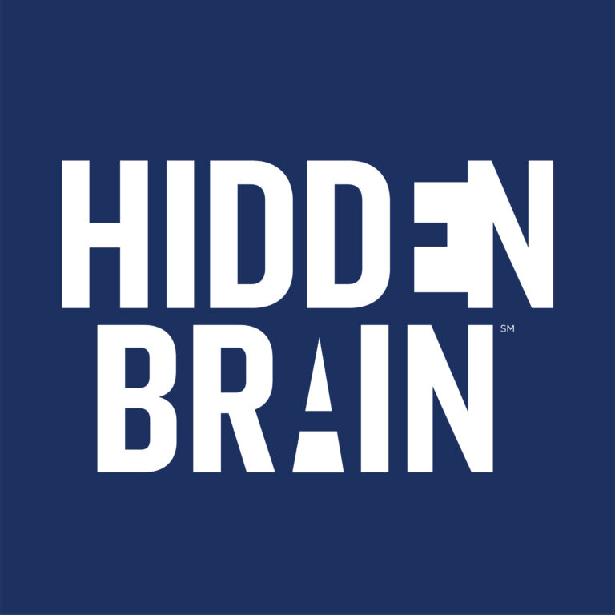

In the news
Featuring Todd
 Experts Explain ‘Purpose Anxiety’ and How to Alleviate It
The Upside of Anxiety
The AtlanticDo People Need Small Talk to Be Happy?
Experts Explain ‘Purpose Anxiety’ and How to Alleviate It
The Upside of Anxiety
The AtlanticDo People Need Small Talk to Be Happy?
Written by Todd
 Psychologists Can Measure a Smile
How Well Can You Spot Happy and Unhappy Strangers?
The Most Dangerous Books in Society
The Seven Rules for Persuasive Dissent
Ten Principles for Embracing Productive Conflict
The Five Dimensions of Curiosity
Psychologists Can Measure a Smile
How Well Can You Spot Happy and Unhappy Strangers?
The Most Dangerous Books in Society
The Seven Rules for Persuasive Dissent
Ten Principles for Embracing Productive Conflict
The Five Dimensions of Curiosity
Podcasts

Happiness 2.0: The Only Way Out Is Through IdeaCastThe Subtle Art of Disagreeing With Your Boss The School of GreatnessWhy Anger, Guilt, and Fear Cultivate Success The Psychology PodcastDancing With the Dark Side of Your Personality Sharon McMahonThe Art of Insubordination Negotiate AnythingThe Art of Insubordination: How to Dissent and Defy EffectivelyPress kit
Portraits


On stage and at events


Short bio (about 70 words)
Todd Kashdan, PhD, is a Professor of Psychology at George Mason University, where he founded the Well-Being Lab. He studies curiosity, purpose in life, and psychological flexibility, with more than 250 peer-reviewed papers cited over 63,000 times. He is the author of Curious?, The Upside of Your Dark Side, and The Art of Insubordination. His next book, On Purpose: The Science of Building a Meaningful Life, arrives in 2027.
Full bio
Todd Kashdan, PhD, is a Professor of Psychology at George Mason University and one of the world’s leading experts on curiosity, purpose in life, psychological flexibility, and social relationships. He received the 2013 Distinguished Early Career Researcher Award from the American Psychological Association and ranks among the top 1% of most-cited scientists in the world, with more than 63,000 citations.
After earning his PhD in clinical psychology in 2004, Todd founded the Well-Being Lab, which has produced more than 250 peer-reviewed articles on well-being, resilience, meaning and purpose, curiosity, and anxiety. His work has been featured in the New York Times, the Wall Street Journal, the Washington Post, Harvard Business Review, and NPR’s Hidden Brain.
Todd is the author of five books, including Curious?, The Upside of Your Dark Side, and The Art of Insubordination, translated into more than 15 languages. His next book, On Purpose: The Science of Building a Meaningful Life, arrives from Ten Speed Press in 2027. He writes the newsletter Provoked and speaks to organizations including Microsoft, Lululemon, Mercedes-Benz, and the World Bank.